Budgeting configurations
The approved budget for a legal entity is maintained in a document that is known as a budget register entry. The lines in a budget register entry document are known as budget account entries, and contain financial dimension information, dates, and the amounts of the approved budget. The budget register entry document is integrated with basic financial reports and inquiry pages where ledger actual amounts are compared to budget amounts.
There are multiple methods for creating budget register entries:
- Manually enter the document information on the Budget register entries page.
- Use the Microsoft Excel template that you can open by clicking the Open in Excel button on the Budget register entries page.
- Use the Budget Account Entries data entity in Data management to import budget register entries. You should consider using this method and turning on the Set based processing parameter when you must import many budget account entries into the system.
- If the company uses Budget planning functionality to prepare budget data, you can use the Generate budget register entry periodic process.
The budget register entry is considered completed when the budget balances have been updated. On the Budget register entries page, click Update budget balances for a selected budget register entry or multiple entries. After you update the budget balances, the status of the budget register entry changes to Completed. Completed budget register entry can't be re-opened for edits. Therefore, if the budget data must be adjusted, you must create a new budget register entry instead of correcting data in the completed budget register entry.
Dimensions For Budgeting
GL Budgets are maintained by GL and by Dimensions in Dynamics 365 Finance and Operations. For activating the dimensions for budgeting, follow these steps:
- Budgeting > Setup > Basic Budgeting > Dimension for Budgeting
- Select the financial dimension and the arrow as shown below to define the dimensions by which budget will be defined.
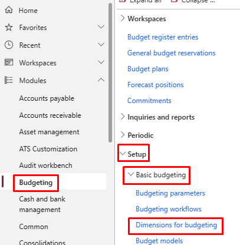
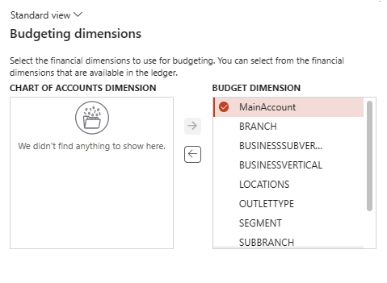
Here, if can select the budgeting dimensions if we want only the main accounts should be included for the budgeting, we have to select only main accounts or if we want some more dimension to be used, we can select this too.
Budget Model
Budget Model helps to define the different methodology or versioning of the budget. For example, Zero Based Budget, Historical Budget, Rolling Forecast Budget, or Rolling Forest Q1/ Rolling Forest Q2/ Rolling Forest Q3/ Rolling Forest Q4. For creating the budget models, follow these steps:
- Budgeting > Setup > Base Budgeting> Budget Models
- Click New button, fill the Budget Model Code, Budget Model Name, and other details
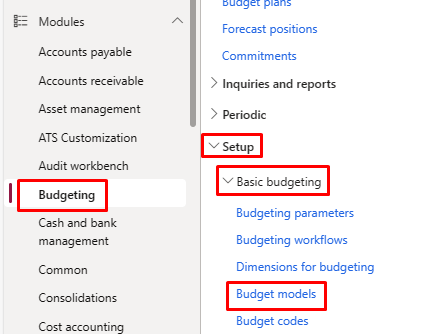
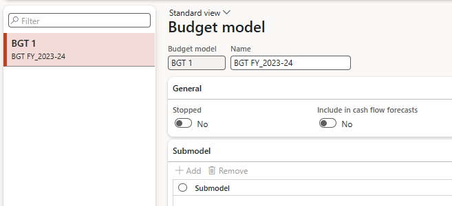
Field | Description |
Budget model | A unique identifier for the budget model. |
Name | The name of the budget model. |
Stopped | Select this check box to block the budget model and all associated ledger budgets for modification. When the budgets that are based on the budget model are approved, you can select this check box to prevent changes to the budgets. |
Cash flow forecasts | Select this check box to indicate that the ledger budgets that are created from the budget model are used in the cash flow forecast. |
Sub model | The identifier of a sub model that is attached to the selected budget model. |
Budget Codes
Budget code helps to define the nature and sub-versioning of budget like original budget, revised transfer, budget transfer, Fixed assets budget, Demand forecast budget etc. and helps to define the different workflow for different nature of budget. To create budget code, follow these steps:
- Click Budgeting > Setup > Basic budgeting > Budget codes.
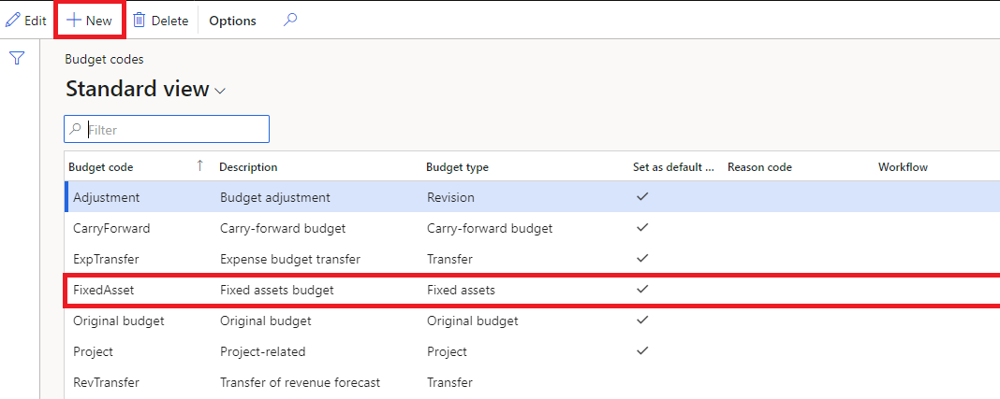
Field | Description |
Budget code | Enter an identifier for the budget code. |
Description | Enter a description for the budget code. |
Budget | Select the budget type to use when this budget code is selected for a budget register entry. |
Original budget – Use when you are creating an initial budget amount for an account. Transfer – Use when you are moving a budget amount from one account to another. Revision – Use when you are changing the budget amount for an account. Use this budget type after you have posted an original budget register entry for the account. Encumbrance – Use when you are manually creating an encumbrance, which is an obligation to pay a vendor. Use this budget type to reserve budget funds so that actual expenses do not exceed the budgeted amount for an account. Note: This option is available only if the Budget control configuration key is selected. Pre-encumbrance – Use when you are manually creating a pre-encumbrance, which is an obligation to pay for a purchase that is likely to occur in the future. Use this budget type to reserve budget funds so that actual expenses do not exceed the budgeted amount for an account. Note: This option is available only if the Budget control configuration key is selected. Carry-forward budget – Use when you are moving budget amounts from one fiscal year to the next. Project – Use when you are transferring project budget forecasts to the general ledger. Fixed assets – Use when you are transferring fixed asset budget forecasts to the general ledger. Demand forecast – Use when you are transferring demand budget forecasts to the general ledger. Supply forecast – Use when you are transferring sales budget forecasts to the general ledger. Preliminary budget – Use when you are creating a preliminary budget for an account when the actual budget is being reviewed and approved. Note: This control is available only if the Public Sector configuration key is selected. Apportionments – Use to show the difference between budgeted amounts and amounts that are approved for spending. For example, a public sector organization might have an original budget of 10,000.00 for an account and use this budget type to approve 5000.00 for spending. Only the amount that is apportioned can be spent. Note: This control is available only if the Public Sector configuration key is selected. | |
Set as default code | Select this check box to indicate that this code will be the default budget code when budget register entries of the selected budget type are created automatically. The default budget code is not used if you manually enter a budget register entry in the Budget register entry form. |
Reason code | Select a ledger reason code for the budget code. |
Workflow | Select a workflow to associate with the budget code. |
Budget Cycle
Use the Budget cycle time spans form to specify the fiscal year or the number of periods for the budget cycles that are associated with the budget cycle time span. Budget cycle time spans are associated with fiscal calendars to determine the length of each budget cycle. To create budget cycle, follow these steps:
- Click Budgeting > Setup > Budget control > Budget cycles.
- Click New and enter a name for the budget cycle time span.
- Select a fiscal calendar to associate with the budget cycle time span.
- In the Length of budget cycle field, select Specify number of periods or Map to fiscal year.
- If you select Specify number of periods, enter the number of accounting periods for the budget cycle. If you select Map to fiscal year, the budget cycle time span uses the fiscal year that is defined by the starting and ending periods for the budget cycle.
- Click Add. Enter the name of the first period in the budget cycle time span and enter the date when that period starts. The ending date for the budget cycle is determined automatically based on the number of fiscal periods in the budget cycle time span.
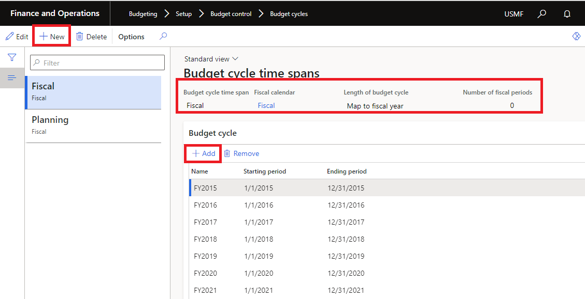
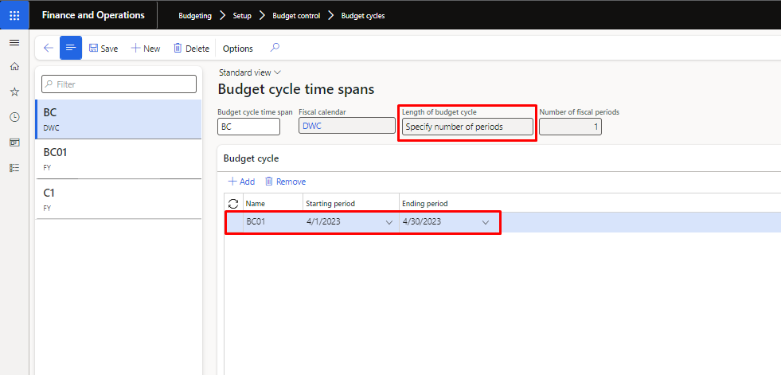
Fields | Description |
Budget cycle time span | Enter a name for the budget cycle time span. |
Fiscal calendar | Select the fiscal calendar for the budget cycle time span. |
Length of budget cycle
| Select how to define the budget cycle length: Specify number of periods – Select this option to specify a budget cycle for a specific number of periods, such as 6, 24, or 36 periods. After you select this option, enter the number of periods. Map to fiscal year – Select this option to use the fiscal year that is defined by the starting and ending periods for the budget cycle. |
Number of fiscal periods | If you selected Specify number of periods in the Length of budget cycle field, enter the number of periods. |
Name | Enter a name for each budget cycle that uses the budget cycle time span. For example, if you mapped the length of the budget cycle to the fiscal year, you would create a budget cycle for each fiscal year. |
Starting period | Select the starting period for the budget cycle. |
Ending period | Select the ending period for the budget cycle. |
In the budget control configuration, all the budget parameters as required needs to be setup. In this, different sections are there as over budget permission, budget funds available, assign budget models, etc. For the budget control configuration, following path need to be followed:
- Budgeting 🡪 Setup 🡪 Budget Control 🡪 Budget control configuration
Define Parameters
After following the above path, on the first section in the left pane “define parameters” user need to define the account structure, budgeting dimension and to define default budget control parameters as shown in the screen. Budget thresholds need to be defined in percentage terms and the Boolean also need to be ticked to get the warning message.
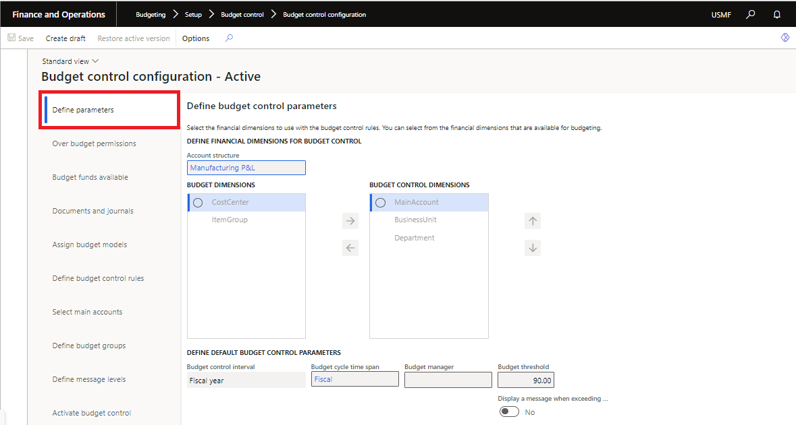
Field Name | Field Explanation |
Account Structure | Select an account structure. If you have multiple active account structures in the chart of accounts, select the account structure that will be used for profit and loss or expense accounts. This account structure includes the main account range for expense accounts. |
Budget Control Dimensions | Financial dimensions for budget control from the financial dimensions that you defined for budgeting |
Budget Control Interval | The budget control interval works with the budget cycle to determine how amounts are aggregated for budget checking. For example, if you select Fiscal year, all the funds for the fiscal year are aggregated for budget checking. If you select Fiscal year to date or Budget to date, the ending date is determined from the fiscal period and the accounting date of the source document or accounting journal that is being checked. |
Budget cycle time span | Length of budget cycle which is to be made need to be mentioned here. |
Budget Threshold | Enter the percentage of the budget that can be spent. The threshold can be used to provide warning messages or to define budget permissions to prevent specific user groups from exceeding the budget threshold. This threshold can exceed 100 percent. |
Message with Boolean | Check box to display messages when the budget threshold is exceeded. This threshold can exceed 100 percent. |
Budget manager | Select a budget manager, which is a user who can approve budget workflows. Another budget manager can be defined by using a budget control rule. |
Over Budget Permission
You can let specific user groups exceed the available budget or restrict user groups from exceeding the available budget or budget thresholds. The Prevent processing at over budget threshold setting is applied to all users who are not in a user group. The settings in this form can be overridden by a budget control rule or budget group.
- Click Budgeting > Setup > Budget control > Budget control configuration.
- Click Over budget permissions.
- Click Add and select a user group.
Note: If you do not have user groups defined, right-click in the Group field and select View details to open the User groups form, where you can create groups and add users.
- In the Over budget options field, select the appropriate option for this user group.
- Prevent over budget processing – Users in this group cannot process a budget register entry if the available budget balance is insufficient to cover the entry.
- Allow over budget processing – Users in this group can process a budget register entry if the available budget balance is insufficient to cover the entry.
- Prevent processing at over budget threshold – Users in this group cannot process a budget register entry if the financial dimension or main account will exceed its specified threshold to cover the entry.
Note If the budget threshold is greater than 100 percent, the Prevent processing at over budget threshold setting is less restrictive than prevent over budget processing.
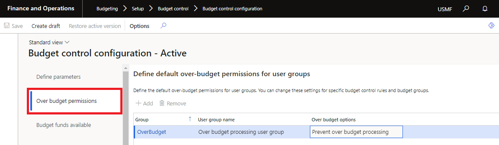
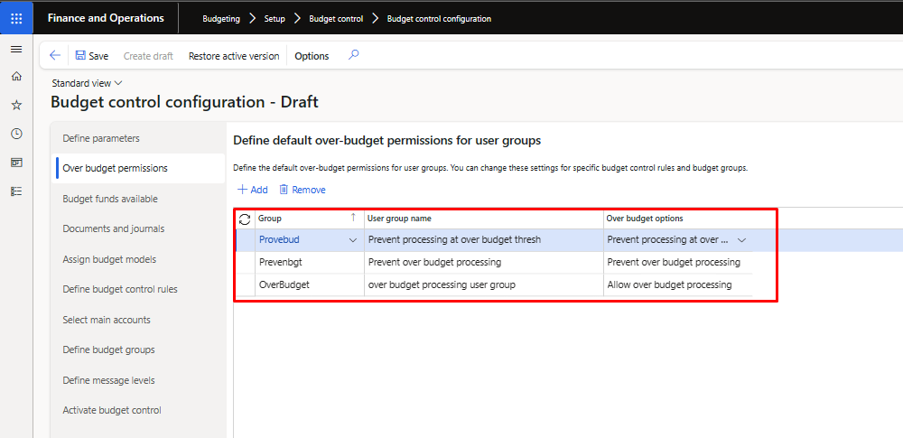
Budget Funds Available
In the Budget funds available area, you can select check boxes to determine the amounts that are added to and subtracted from the budget funds that are available. Original budget and Actual expenditures are selected by default, so that the default calculation is Budget funds available = Original budget - Actual expenditures. The budget funds calculation is displayed under the check boxes, so that you can view how the calculation changes as you select and clear the check boxes.
- Click Budgeting > Setup > Budget control > Budget control configuration.
- Click Budget funds available.
- Select the Include carry-forward amounts check box to include amounts that are carried forward as part of a purchase order year-end process, and also to carry forward budget register entries that have a budget type of Carry-forward budget.
As part of the purchase order year-end process, budget amounts from open purchase orders can be carried forward into the next fiscal year. Any budget reservations for encumbrances are also carried forward. When invoices are recorded against the purchase orders that were carried forward, budget control treats the actual expenditures as carry-forward amounts, also. Therefore, inquiries and reports can display those amounts separately from the amounts that were not carried forward.
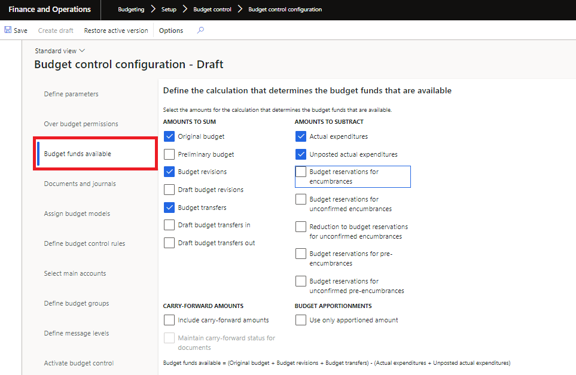
Field | Description |
Original budget | Original budget register entries that have a document status of Completed. Also included are the Project, Fixed assets, Demand forecast, and Supply forecast budget types that have a document status of Completed, which are treated as original budget amounts after they are transferred from other modules. The sum of the amounts of budget register entries that have budget types of original budget, Revision, Transfer, Carry-forward budget, Project, Fixed assets, Demand forecast, and Supply forecast. |
Preliminary budget | Preliminary budget register entries that have a document status of Completed. These are used to create a preliminary budget when the actual budget is being reviewed and approved. Note This control is available only if the Public Sector configuration key is selected. |
Budget revisions | Budget register entries that add changes to original budgets and that have a document status of Completed. |
Draft budget revisions | Budget register entries that add changes to original budgets and that have a document status of Draft. |
Budget transfers | Budget register entries that transfer budget amounts from one financial dimension value to another and that have a document status of Completed. |
Draft budget transfers in | Transfer budget register entries that increase the budget and that have a document status of Draft. |
Draft budget transfers out | Transfer budget register entries that decrease the budget and that have a document status of Draft. |
Budget apportionments | Budget register entries that have a document status of Completed. Apportionments are used in the public sector to show the difference between budgeted amounts and the amounts that are approved for spending. For example, a public sector organization might have an original budget of 10,000.00 for an account and use an apportionment to approve 5000 for spending. Only the amount that is apportioned can be spent. Note This control is available only if the Public Sector configuration key is selected. |
Actual expenditures | Actual expenditures that are recorded in the general ledger from expense reports, vendor invoices, and accounting journals. The amounts from the source documents or accounting journals are included in the budget check only when the source document or accounting journal is enabled for budget control. |
Unposted actual expenditures | Actual expenditures that are not yet recorded in the general ledger from expense reports, vendor invoices, and accounting journals. The amounts from the source documents or accounting journals are included in the budget check only when the source document or accounting journal is enabled for budget control. |
Budget reservations for encumbrances | Budget reservations that are created for confirmed purchase orders, general budget reservations, or travel requests, and budget register entries that have a document status of Completed and use the Encumbrance budget type. |
Budget reservations for unconfirmed encumbrances | Budget reservations that are created for unconfirmed purchase orders, general budget reservations, or travel requests, and budget register entries that have a document status of Draft use the Encumbrance budget type. These are manual budget reservations that are not yet included in the overall budget balance. Note If you do not select this check box, budget checks can still be performed on draft source documents, such as purchase orders, general budget reservations, and travel requests. However, the amount of the budget reservation is not included in the budget check for subsequent source documents. You can do this to perform a budget check on draft documents without creating a committed reservation. |
Reduction to budget reservations for unconfirmed encumbrances | Amounts that reduce the amounts that are reserved for unconfirmed obligations to pay. Since a correction to a purchase order can be reverted, this option is intended to prevent a reduction in a budget reservation amount because of a correction to a purchase order until the correction is confirmed. |
Budget reservations for pre-encumbrances | Budget reservations that are created for approved and confirmed purchase requisitions, and budget register entries that have a status of Completed and use the Pre-encumbrance budget type. |
Budget reservations for unconfirmed pre-encumbrances | Budget reservations that are created for unconfirmed and unapproved purchase requisitions, and budget register entries that have a status of Draft and use the Pre-encumbrance budget type. These manual budget reservations are created through budget register entries but are not included in the overall budget balance. Note If you do not select this check box, budget checks can still be performed on draft purchase requisitions. However, the amount of the budget reservation is not included in the budget check for subsequent source documents. You can do this to perform a budget check on draft documents without creating a committed reservation. |
Select Source Documents
In the Select source documents area, you can select check boxes to determine the source documents that are subject to budget control. You can also select check boxes to enable budget checks as the lines for source documents are entered and saved.
You should match the source documents that you select with the check boxes that you selected for the budget funds available calculation in the Budget funds available area. For example, if you selected Budget reservations for encumbrances to be included in the budget funds available calculation, you might want to select the Purchase orders check box. When a budget check is performed for the amounts and accounts on a purchase line, the budget control category that is assigned to the reservation is Encumbrance.
Note A budget check is performed when a source document is created but not when it is edited. A budget check is performed when a source document is submitted to workflow and when it is approved and confirmed.
- Click Budgeting > Setup > Budget control > Budget control configuration.
- Click Select source documents.
- Select the Purchase requisitions check box. The Purchase orders and Vendor invoices check boxes are automatically selected.
If you do not select the Purchase requisitions check box and you instead select the Purchase orders check box, the Vendor invoices check box is automatically selected. You can select Vendor invoices, Travel requisitions, and Expense reports independently of the other source documents.
Note When you select Vendor invoices, invoice journals, invoice approval journals, and invoice register journals are also enabled for budget control.
- For each source document, you can select the Enable budget control for line item on entry check box to enable budget checking for each line as the line is entered and saved.
Note When a purchase requisition is converted to a purchase order, a budget check is performed, even when line-level checking is not enabled. This relieves the pre-encumbrance and establishes the draft encumbrance. When an invoice is created from a purchase order, a budget check is performed, even when line-level checking is not enabled.
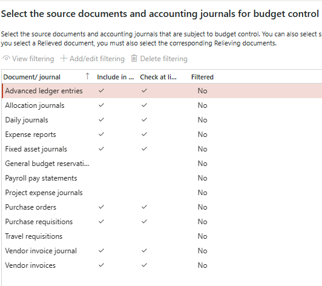
Assign Budget Models
You can assign a budget model to a budget cycle to perform budget checking for the budget cycle. Only one budget model can be in use for a budget cycle. A budget check is performed when the accounting date for a source document or accounting journal that is enabled for budge control is in the budget cycle.
Note The budget cycle must be defined before you associate the budget cycle with a budget model. In the Assign budget models area, you can click the Budget models link to open the Budget model form, and you can click the Budget cycle time spans link to open the Budget cycle time spans form.
- Click Budgeting > Setup > Budget control > Budget control configuration.
- Click Assign budget models.
- Click Add and select a budget cycle time span.
- Select a budget cycle.
- Select a budget model. Only budget models that do not contain sub models are available for budget control.
Note The budget cycle that is being used for budget control can also be determined by the budget cycle time span that is selected for a budget control rule.
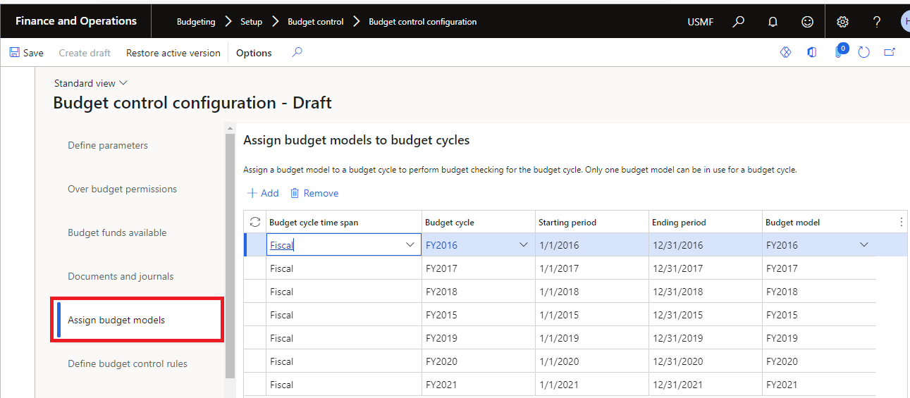
Define Budget Control Rules
Budget control rules are required for budget control. They determine the financial dimension value combinations for budget control. The budget control rules are validated against the ledger accounts that are being used on source document accounting distributions and accounting journals. If the financial dimensions in the ledger accounts match the financial dimensions in the budget control rules, a budget check occurs.
The default budget control parameter values that you entered in the Define parameters area are used unless you specify a different budget cycle time span, budget interval, budget threshold, or budget manager for individual rules. For example, to assign a different budget threshold to only one department, you could define two budget control rules: one rule for the specific department and its budget threshold, and another rule for all of the other departments for their threshold.
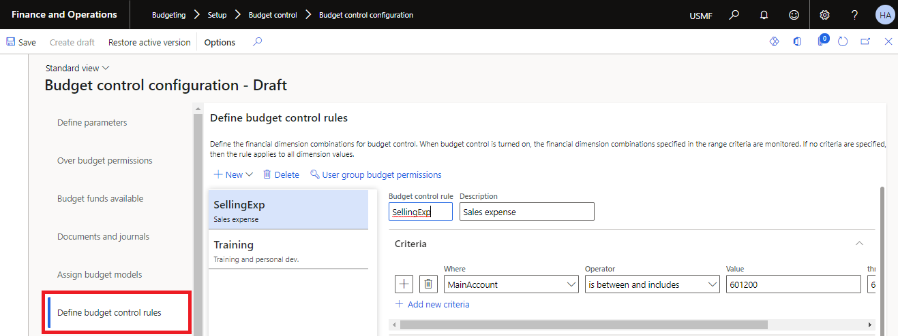
Budget Control Rule Setup- Click Budgeting > Setup > Budget control > Budget control configuration.
- Click Define budget control rules.
- Define a rule where Department 010 has a budget threshold of 90.
- Click New to create a rule, and then enter a rule name and description.
- On the Criteria Fast Tab, click Add filter.
- In the Where list, select the Department financial dimension.
- In the Operator list, select is, and then enter Department Code 010 as the department number.
- In the Budget threshold field, enter 90.
- Define a second rule where all other departments have a budget threshold of 100.
- Click New to create another rule, and then enter a rule name and description.
- On the Criteria Fast Tab, click Add filter.
- In the Where list, select the Department financial dimension.
- In the Operator list, select is greater than and includes and enter Department Code 020, which will include all departments except Department 010.
- In the Budget threshold field, enter 100.
NOTE: Criteria in two or more rules that cover the same financial dimension values are not allowed. If all financial dimension value combination will be enabled for budget control, you can define a budget control without criteria.
Budget Control Rule User Group Permissions
You can define a budget control rule to provide unique user group permissions to budget amounts for specific financial dimension combinations. If the default over budget option for all user groups is Prevent over budget processing, you can define a rule that has a different over budget option for one user group for specific financial dimension combinations. For example, if you define a budget control rule that has a budget threshold of 90 for Department 010, you could define user group permissions for one user group in Department 010 to allow over budget processing for that user group.
- Click Budgeting > Setup > Budget control > Budget control configuration.
- Click Define budget control rules.
- Define a rule where Department 010 has a budget threshold of 90.
- Click User group budget permissions.
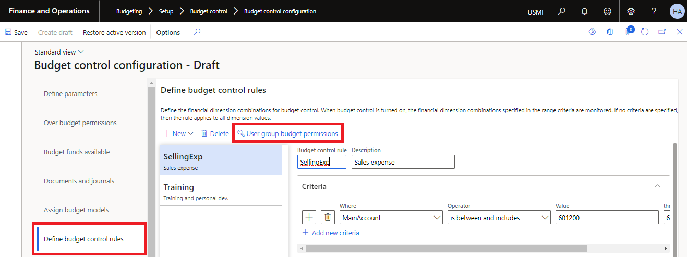
- For one of the user groups in Department 010, select Allow over budget processing in the Over budget options field.
Important: If you define budget groups, you must select the over budget options to prevent or allow budget group checking when budget funds are not available. For more information, see “Define budget groups” in this topic.
- To override the current user group budget permissions for the budget control configuration, click Copy. Select a user group to copy and then edit the specific user group budget permissions.
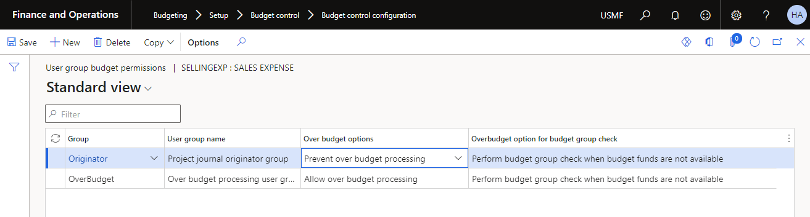
NOTE: It is mandatory to create the budget control rule.
Scenario 1: if you want to select all the same rule for all budget dimension then just create one control rule with no criteria.
- Click Budgeting > Setup > Budget control > Budget control configuration.
- Click Define budget control rules.
- Define budget control interval
- Define budget cycle time span
- Give the budget manager.
- Define the budget threshold limit.
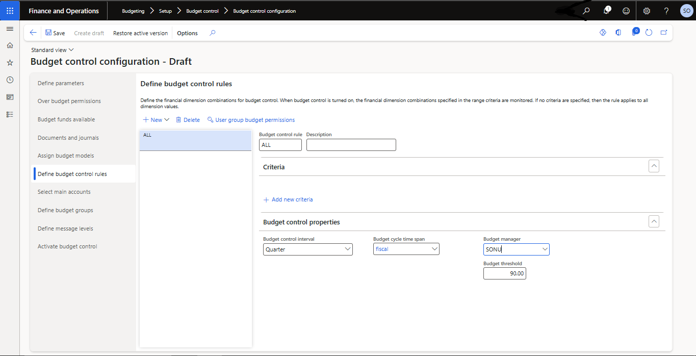
Budget Control Interval
The budget control interval works with the budget cycle to determine how amounts are aggregated for budget.
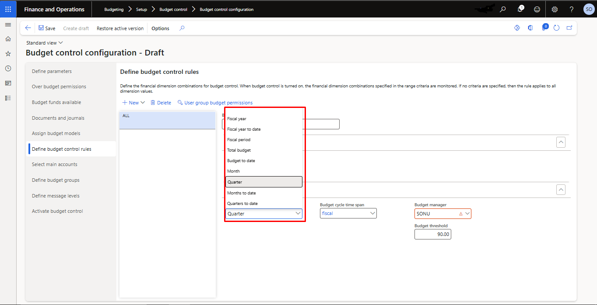
Fiscal year | If you select Fiscal year, all the funds for the fiscal year are aggregated for budget checking |
Fiscal year to date | If you select fiscal year to date, the ending date is determined from the fiscal period and the accounting date of the source document or accounting journal that is being checked. |
Total budget | If you select total budget, all the funds available are aggregated for budget checking. |
Budget to date | If you select budget to date, the ending date is determined from the budget period and the accounting date of the source document or accounting journal that is being checked. |
Month | If you select Month, all the funds for the Months are aggregated for budget checking |
Months to date | If you select months to date, the ending date is determined from the month period and the accounting date of the source document or accounting journal that is being checked. |
Quarter | If you select Quarter, all the funds for the Quarter are aggregated for budget checking |
Quarter to date | If you select Quarter to date, the ending date is determined from the Quarter period and the accounting date of the source document or accounting journal that is being checked. |
Fiscal period | If you select Fiscal period, the budget check will occur at the fiscal period you select for the budget checking. |
Define Budget Group
In the Define budget groups area, you can define budget groups to form a budget pool, or a collection of financial dimension values whose budgets will be pooled for a secondary budget check. The financial dimension combinations that are found in the budget control rule are always checked for budget amounts. If a financial dimension combination is also found in a budget group, a second budget check is performed at the budget group level.
For example, if there was a budget control rule for all combinations of the main account and business unit financial dimensions, you could also define a budget group for main account, which would include all the business unit in that main account. This budget group would pool the budget of all the business unit for main account. If an initial budget check failed for a business unit in main account, a second budget check would be performed on the aggregate budget for all business unit in main account
- Click Budgeting > Setup > Budget control > Budget control configuration.
- Click Define budget groups.
- The ledger name is displayed at the top of the hierarchy.
- Click Add to create a budget group member.
- Enter a budget group name and description.
- When you add a group member, you can add filter criteria, change user group permissions, and modify the default budget control properties.
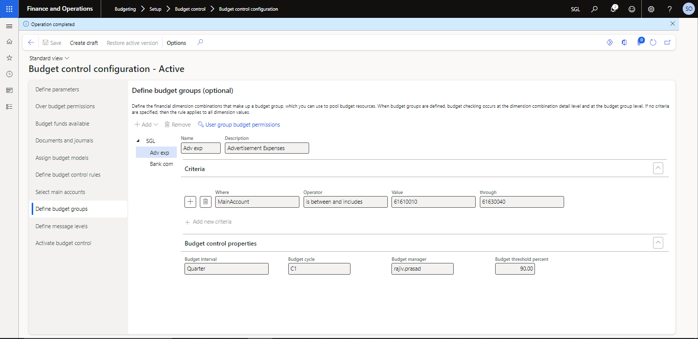
NOTE: Multiple criteria can be specified for a budget group. All the criteria are used to determine the financial dimension combinations for the budget group. No overlapping criteria are allowed across budget groups and budget group members.
To perform the secondary budget check, the Overbudget option for budget group check setting in the User group budget permissions form for budget control rules must be set to Perform budget group check when budget funds are not available. Refer to below image:
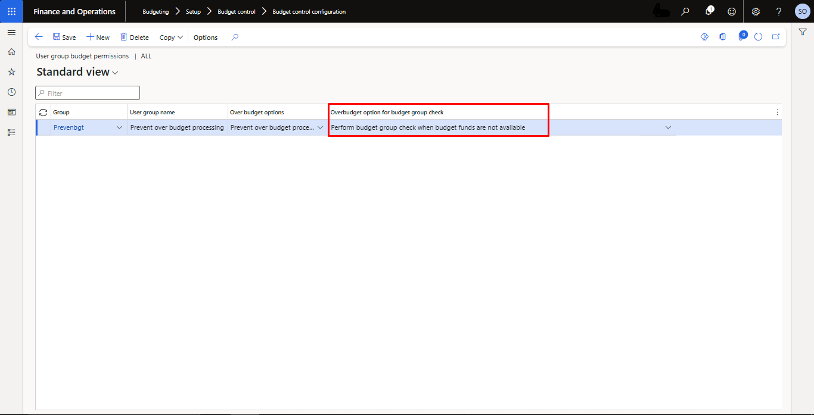
Define Message Level
In the Define message levels area, you can specify that budget control warning messages will not be displayed for selected user groups. Users in the selected user groups will continue to receive error messages based on their over budget permissions.
1. Click Budgeting > Setup > Budget control > Budget control configuration.
2. Click Define message levels.
3. Click Select all or select the check boxes next to the user groups that will not receive budget control warning messages.
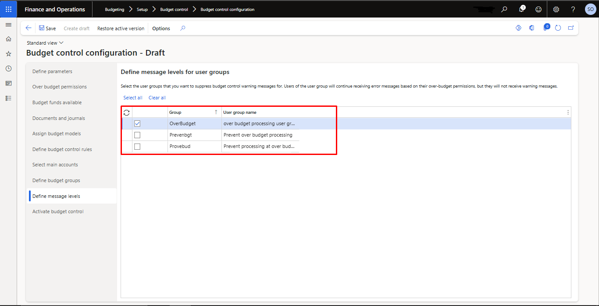
Select Main Accounts
If the main account financial dimension is not defined for budget control, you can select the main accounts that the budget control rules will be enforced for. If the main account financial dimension is defined as a budget control dimension, the main account financial dimension is included in the budget control rules, and this setup step is not required.
Only main account types of Totals, Profit and loss, and Expense can be selected, because these are the accounts that typically are used for actual expenditures. Accounts that have a Total type are included because you can enter budget amounts in main accounts that have a Total type.
- Click Budgeting > Setup > Budget control > Budget control configuration.
- Click Select main accounts.
- Select the check boxes to select the main accounts or click Select all to select all the main accounts.
- You can also click Select to define a query to filter the list of main accounts.
If you selected the main accounts in dimension and also define the main accounts in the budget control configuration
Activate Budget Control
In the Activate budget control area, you can make a draft budget control configuration active by clicking Activate. When you turn on budget control, the active budget control configuration takes effect.
- Click Budgeting > Setup > Budget control > Budget control configuration.
- Click Activate budget control.
- Click Activate to make the draft version of the budget control configuration active.
The Date when last activated field displays the current date, and the Activated by field displays your user ID.
- Click Turn on to start budget control by using the active configuration.
- The budget control status changes to Turned on, and the Turn on option is replaced with Turn off.
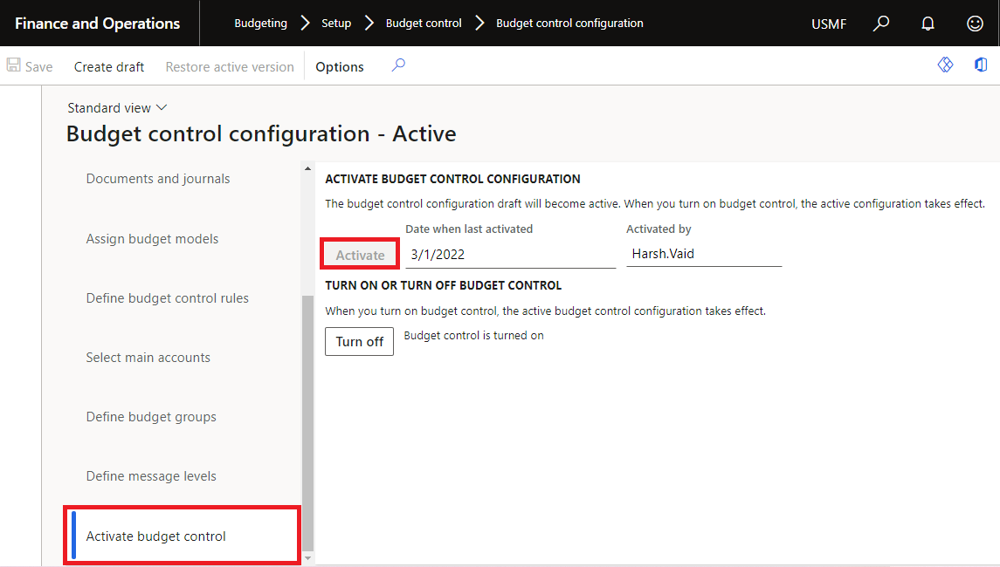
After activating the budget control now, you can do budget register entries.
Note:
1. if you do not turn on the budget control as well as do not active the budget control the budget control will not work.
2. If you turn off budget control, source documents and accounting journals that have a status of Draft are removed from the budget control tracking system. No additional budget checks are performed. If you turn on budget control again, you might have to manually adjust the budget to correct reserved budget amounts.